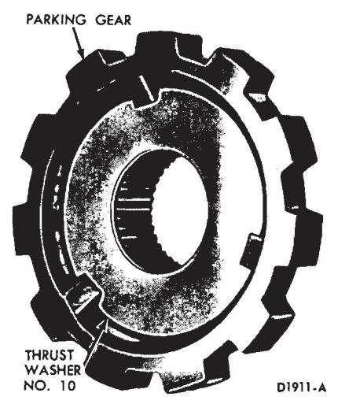
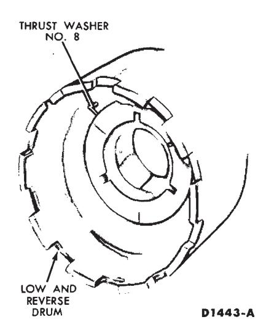

C4 Automatic and C4S Semi-Automatic Transmissions · 17-02-36
When assembling the transmission sub-assemblies (Fig. 95), make sure that the correct thrust washer is used between certain sub-assemblies. Lubricate remaining surfaces with transmission fluid. Vaseline should be used to hold the thrust washers in their proper location. If the end play is not within specifications after the transmission is assembled, either the wrong selective thrust washers were used, or a thrust washer came out of position during the transmission assembly operation.
-
Install thrust washer No. 9 inside the transmission case (Fig. 96).
-
Place the one-way clutch outer race inside the case. From the back of the case install the six outer race-to-case attaching bolts. Torque the bolts to specification with the tools shown in Fig. 97.

Fig. 99 — Number 10 Thrust Washer Location -
Place the transmission case in a vertical position with the back face of the case upward. Install the parking pawl retaining pin in the case (Fig. 98).
-
Install the parking pawl on the case retaining pin. Install the parking pawl return spring as shown in Fig. 89.
-
Install thrust washer No. 10 on the parking gear (Fig. 99). Place the gear and thrust washer on the back face of the case (Fig. 98).
-
Place the two distributor tubes in the governor distributor sleeve. Install the distributor sleeve on the case. As the distributor sleeve is installed, the tubes have to be inserted in the two holes in the case and the parking pawl retaining pin has to be inserted in the alignment hole in the distributor.
-
Install the four governor distributor sleeve-to-case attaching bolts and torque the bolts to specification.
-
On a C4 automatic transmission, install the governor distributor assembly on the output shaft. Install the distributor retaining snap ring (Fig. 45). Figure 100 shows the correct snap ring to be used.
-
On a C4 automatic transmission, check the rings in the governor distributor, making sure the rings are fully inserted in the ring grooves and will rotate freely. Install the output shaft and governor distributor assembly (if so equipped) in the distributor sleeve (Fig. 44).
-
Place a new extension housing gasket on the case. Install the extension housing, vacuum tube clip (if so equipped), and the extension housing-to-case attaching bolts. Torque the bolts to specification.
-
Place the transmission in the holding fixture with the front pump mounting face of the case. Make sure thrust washer No. 9 is still located at the bottom of the transmission (Fig. 95).
-
Install the one-way clutch spring retainer into the outer race.
-
Install the inner race inside of the spring retainer. Be sure the face with the step is installed toward the rear of the case, mating with the thrust washer.
-
Install the individual springs between the inner and outer race as shown in Fig. 101.
-
Starting at the back of the transmission case, install the one-way clutch rollers by slightly compressing each spring and positioning the roller between the spring and the spring retainer.
-
After the one-way clutch has been assembled, rotate the inner race clockwise to center the rollers and springs. Install the low and reverse drum (Fig. 95). The splines of the drum have to engage with the splines of the one-way clutch inner race. Check the one-way clutch operation by rotating the low and reverse drum. The drum should rotate clockwise but should not rotate counterclockwise.

Fig. 102 — Number 8 Thrust Washer Location -
Install thrust washer No. 8 on top of the low and reverse drum (Fig. 102). Install the low-reverse band in the case, with the end of the band for the small strut toward the low-reverse servo (Fig. 43).
-
Install the reverse ring gear and hub on the output shaft.
-
Move the output shaft forward and install the reverse ring gear hub-to-output shaft retaining ring (Fig. 42).
-
Place thrust washers Nos. 6 and 7 on the reverse planet carrier (Fig. 103).
-
Install the planet carrier in the reverse ring gear and engage the tabs of the carrier with the slots in the low-reverse drum.
-
On the bench, install the forward clutch in the reverse-high clutch by rotating the units to mesh the reverse-high clutch plates with the splines of the forward clutch (Fig. 104).
-
Using the end play check reading that was obtained during the transmission disassembly to determine which No. 2 steel backed thrust washer is required, proceed as follows:
- a. Position the stator support vertically on the work bench and install the correct No. 2 thrust washer or washer and spacer as required to bring the end play within specifications.
- b. Install the reverse-high clutch and the forward clutch on the stator support.
- c. Invert the complete unit making sure that the intermediate brake drum bushing is seated on the forward clutch mating surface.
- d. Select the thickest fiber washer (No. 1) that can be inserted between the stator support and the intermediate brake drum thrust surfaces and still maintain a slight clearance. Do not select a washer that must be forced between the stator support and intermediate brake drum.
- e. Remove the intermediate brake drum and forward clutch unit from the stator support.
- f. Install the selected Nos. 1 and 2 thrust washers on the front pump stator support (Fig. 33) using enough vaseline to hold the thrust washers in position during the front pump installation.
-
Install thrust washer No. 3 on the forward clutch (Fig. 105).
-
Install the forward clutch hub and ring in the forward clutch by rotating the units to mesh the forward clutch plates with the splines on the forward clutch hub (Fig. 106).
-
Install thrust washer No. 4 on the front planet carrier (Fig. 107). Install the front planet carrier into the forward clutch hub and ring gear. Check the forward thrust bearing race inside the planet carrier for proper location against the thrust bearing. Make sure the race is centered for alignment with the sun gear on the input shell (Fig. 108).
-
Install the input shell and sun gear on the gear train (Fig. 109). Rotate the input shell to engage the drive lugs of the reverse-high clutch. If the drive lugs will not engage, the outer race inside the forward planet carrier is not centered to engage the end of the sun gear inside the input shell. Center the thrust bearing race and install the input shell.
-
Hold the gear train together and install the forward part of the gear train assembly in the case (Fig. 38).
The input shell sun gear must mesh with the reverse pinion gears. The front planet carrier internal splines must mesh with the splines on the output shaft.
-
A new band should be soaked in transmission fluid for fifteen minutes before it is installed. Install the intermediate band through the front of the case (Fig. 36).
-
Install a new front pump gasket on the case. Line up the bolt holes in the gasket with the holes in the case.
-
Install the front pump stator support into the reverse-high clutch. Align the pump-to-case attaching bolt holes. Install the front pump-to-case attaching bolts and torque them to specification.
-
Install the input shaft (Fig. 34). Be sure the short splined end is installed toward the rear of the transmission. Rotate the holding fixture to place the transmission in a horizontal position. Check the transmission end play as shown in Fig. 32. If the end play is not within specification, either the wrong selective thrust washers (Fig. 33) were used, or one of the 10 thrust washers (Fig. 95) is not properly positioned.
-
Remove the dial indicator used for checking the end play and install the one front pump-to-case attaching bolt. Torque the bolt to specification.
-
Place the converter housing on the transmission case. Install the five converter housing-to-case attaching bolts. Torque the bolts to specification.
-
Install the intermediate and low-reverse band adjusting screws in the case. Install the struts for each band (Fig. 31).
-
Adjust the intermediate and low-reverse band. Refer to In-Vehicle Adjustments and Repair for band adjusting procedures.
-
Install a universal joint yoke on the output shaft. Rotate the input and output shafts in both directions to check for free rotation of the gear train.
-
Install the control valve body (Fig. 30). Refer to In-Vehicle Adjustments and Repair for the control valve body installation procedures.
-
Place a new pan gasket on the case and install the pan and pan-to-case attaching bolts. Torque the attaching bolts to specification.
-
Remove the transmission from the holding fixture. Install the two extension housing-to-case attaching bolts. Torque the bolts to specification.
-
On a C4 automatic transmission, install the primary throttle valve in the transmission case (Fig. 28).
-
On a C4 automatic transmission, install the vacuum unit, gasket, and control rod in the case. Using the tools shown in Fig. 110, torque the vacuum unit to 15-23 ft-lbs.
-
Make sure the input shaft is properly installed in the front pump stator support and gear train. The short splined end of the shaft should be installed toward the rear of the transmission. Install the converter in the front pump and the converter housing.